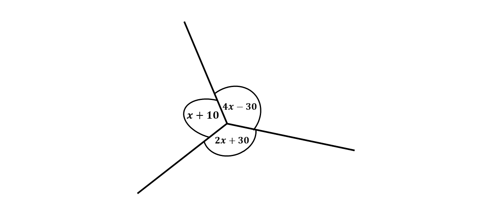
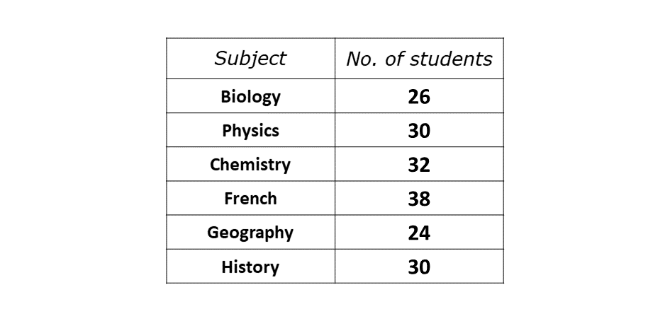

BECE
Year to Practice:
1990
1991
1992
1993
1994
1995
1996
1997
1998
1999
2000
2001
2002A
2002B
2003
2004
2005
2006
2007
2008
2009
2010
2011
2012
2013
2014
2015
2016
2017
2018
2019
2020
2021
2022
2023
PAST QUESTIONS 2012
Section A
Time yourself to improve on your speed. You are to use not more than 60 minutes for this section.
Click on the link below when your are ready.
Kindly contact the administrator of the site on WhatsApp or Phone (0208711375) for the link to the test.
Section B
Try the questions first, using not more than 15 minutes for each question, and watch the accompanying videos to see how the questions are solved.
Question 1
\(a)\) Evaluate \(\frac{0.035 \times 1.02}{0.00015}\), leaving your answer in standard form.
\(b)\) An amount of Gh₵4,200.00 was shared between Aba and Kwame. If Aba had \(\frac{5}{7}\) of the amount,
\(\hspace{0.5cm} i)\) how much did Kwame receive?
\(\hspace{0.5cm} ii)\) what percentage of Aba's share did Kwame receive?
\(c)\) Find the value of \(x\) in the diagram below.
Question 2
\(a)\) A car consumes a gallon of petrol for every 30 km drive. The driver of the car set out on a journey of 420 km with 10 gallons of petrol in the fuel tank.
\(\hspace{0.5cm} i)\) How many gallons of petrol will be needed to complete the journey?
\(\hspace{0.5cm} ii)\) Find the cost of the petrol used for the journey of 420 km if a gallon of petrol costs GH₵5.50.
\(b)\) The average number of spectators at a football competition for the first five days was 3,144. The attendance on the sixth day was 3,990. Find the
\(\hspace{0.5cm} i)\) total attendance on the first five days
\(\hspace{0.5cm} ii)\) average attendance for the 6 days.
\(c)\) The area enclosed by a square garden is 121 m\(^2\). What is the distance around the garden?
Question 3
\(a)\) The table shows the number of students who scored more than 80% in the listed subjects.
\(\hspace{0.5cm} i)\) Draw a pie chart for the distribution.
\(\hspace{0.5cm} ii)\) What is the probability that a student chosen at random from the distribution offers Chemistry?
\(b)\) A woman bought 210 oranges for Gh₵7.50. She sold all of them at 3 for 15 Gp. Find the
\(\hspace{0.5cm} i)\) total selling price of the oranges;
\(\hspace{0.5cm} ii)\) percentage profit.
Question 4
The marks scored by some students in a Mathematics test are as follows:
\(\hspace{0.5cm}\) 3 \(\hspace{0.5cm}\) 3 \(\hspace{0.5cm}\) 5 \(\hspace{0.5cm}\) 6 \(\hspace{0.5cm}\) 3 \(\hspace{0.5cm}\) 4
\(\hspace{0.5cm}\) 7 \(\hspace{0.5cm}\) 8 \(\hspace{0.5cm}\) 3 \(\hspace{0.5cm}\) 4 \(\hspace{0.5cm}\) 5 \(\hspace{0.5cm}\) 4
\(\hspace{0.5cm}\) 7 \(\hspace{0.5cm}\) 4 \(\hspace{0.5cm}\) 3 \(\hspace{0.5cm}\) 7 \(\hspace{0.5cm}\) 4 \(\hspace{0.5cm}\) 6
\(\hspace{0.5cm}\) 4 \(\hspace{0.5cm}\) 8 \(\hspace{0.5cm}\) 4 \(\hspace{0.5cm}\) 5 \(\hspace{0.5cm}\) 6 \(\hspace{0.5cm}\) 3
\(\hspace{0.5cm}\) 8 \(\hspace{0.5cm}\) 4 \(\hspace{0.5cm}\) 5 \(\hspace{0.5cm}\) 6 \(\hspace{0.5cm}\) 4 \(\hspace{0.5cm}\) 5
\(a)\) Construct a frequency distribution table for the scores.
\(b)\) Using the table, find for the distribution, the
\(\hspace{0.5cm} i)\) mode;
\(\hspace{0.5cm} ii)\) mean, correct to one decimal place;
\(\hspace{0.5cm} iii)\) median
Question 5
\(a)\) \(i)\) Find the Least Common Multiple (L. C. M) of 9, 18 and 16.
\(\hspace{0.5cm} ii)\) Arrange \(\frac{8}{9}\), \(\frac{7}{18}\) and \(\frac{10}{16}\) in ascending order of magnitude.
\(b)\) Using a ruler and a pair of compass only,
\(\hspace{0.5cm} i)\) construct a triangle \(PQR\) with length \(|PQ| = 10\) cm, angles \(QPR = 45^\circ\) and \(PQR = 60^\circ\).
\(\hspace{0.5cm} ii)\) Construct the perpendicular bisectors of \(PR\) and \(RQ\) to meet at T.
\(\hspace{0.5cm} iii)\) Measure the length of \(TP\).
Question 6
\(\hspace{0.5cm} i)\) Using a scale of 2 cm to 1 unit on both axes, draw two perpendicular axes \(Ox\) and \(Oy\) on a graph sheet.
\(\hspace{0.5cm} ii)\) Mark on the same graph sheet, the \(x\)-axis from \(-5\) to \(5\) and \(y\)-axis from \(-6\) to \(6\).
\(\hspace{0.5cm} iii)\) Plot the points \(P(4, 2)\), \(Q(2, 5)\) and \(R(2, 2)\). Join the points \(P, Q, R\) to form triangle \(PQR\).
\(\hspace{0.5cm} iv)\) Using the \(x\)-axis as a mirror line, draw the image \(P_1Q_1R_1\) of the triangle \(PQR\) such that \(P \rightarrow P_1\), \(Q \rightarrow Q_1\), \(R \rightarrow R_1\).
\(\hspace{0.5cm} v)\) Write down the coordinates of \(P_1, Q_1\) and \(R_1\).
\(\hspace{0.5cm} vi)\) Translate triangle \(PQR\) by the vector \(\begin{pmatrix} -1 \\ -1 \end{pmatrix}\) such that \(P \rightarrow P_2\), \(Q \rightarrow Q_2\), \(R \rightarrow R_2\).
\(\hspace{0.5cm} vii)\) Label the vertices of triangle \(P_2Q_2R_2\).